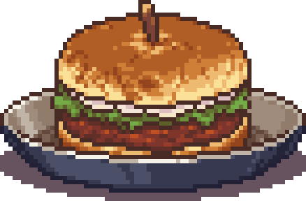

호레리카

던전 내 NPC 호레리카에게 구매 가능. 이 게임의 실질적인 레벨 업 시스템으로, 모든 수치는 랜덤이며 층 수가 올라갈수록 보다 높은 능력치를 올려줄 확률이 높아진다.
Food
던전 내 NPC 호레리카에게 구매 가능. 이 게임의 실질적인 레벨 업 시스템으로, 모든 수치는 랜덤이며 층 수가 올라갈수록 보다 높은 능력치를 올려줄 확률이 높아진다.
계란 프라이

위력, 최대 체력
구운 버섯

위력, 크리티컬 대미지, 크리티컬
디럭스 버거
위력, 최대 체력, 방어력
매운 소스 미트볼
위력
매운 치킨 스튜

위력, 방어력, 회피
빵
위력, 방어력
야채 살사 수프
위력, 최대 체력, 크리티컬
양념된 작은 새

위력, 방어력, 크리티컬
양파 수프
위력, % 최대 체력
완구콩 수프

위력, 회피
토마토 수프
위력, 크리티컬
그리핀 알 오믈렛
+1 대쉬 횟수
딸기 파이
+1~3 고정 대미지, 약간의 위력
라즈베리 쿠키

랜덤한 공격속도
레몬에이드
랜덤한 재장전속도
맥주
무기 스왑 시 10s동안 위력 50 증가 (재사용 대기시간 35s)
미노타우루스 스테이크
쓰러지면 절반의 HP로 부활
비빔밥
액세서리 슬롯 1개 추가, 약간의 위력&최대 체력.
새우 튀김
방어력, 크리티컬, 강인함, 고정 데미지, 최대 체력, 회피, 막기를 조금씩 증가.
시나몬 롤
랜덤한 이동속도, 공격속도, 재장전속도[3
양파 소스 미트볼
+20 위력, +5 방어력, +5 크리티컬, +5 회피
장어 구이
+20~45 최대 체력
초콜릿 쿠키
골드 획득 시마다 추가로 4골드를 더 획득, 약간의 위력
콤비네이션 피자
랜덤한 크리티컬 데미지
콤비네이션 피자
랜덤한 크리티컬 데미지
특제 고기요리
+1~3 강인함
훈제 연어

새로운 방으로 이동할 때마다 줄어드는 포만감 +1
탄산수
랜덤한 포만감 감소